노트
어휘: 다음 어휘를 노트에 기록하세요. 학습 활동을 완료하면서 어휘에 관련된 정의와 핵심 용어를 채워 넣으세요:
- 증폭
- 공명
도입
트럼펫 같은 악기는 음악가가 겨우 소리를 불어넣는데 어떻게 그렇게 큰 소리를 낼 수 있을까요? 이는 트럼펫을 이루는 관의 길이가 는 the trumpet is made from naturally amplifies certain frequencies of sound. 이러한 진동수를 고유 진동수 또는 공명 진동수라고 합니다.
대부분의 물체는 자연적으로 진동하는 공명 진동수를 가지고 있습니다. 때때로 이 진동의 결과는 놀라울 수 있습니다. 지진이 발생하면 일부 건물은 완전히 무너지는 반면, 근처의 다른 건물들은 약간만 손상됩니다. 지진의 강도 외의 다른 요인이 피해 정도를 결정합니다. 건물의 공명 진동수가 지진의 진동수에 가까우면, 지진 중 건물이 극적으로 흔들리고 무너질 수도 있는 반면, 근처 건물들은 견고하게 서 있습니다. 지진으로부터 건물을 안전하게 유지하기 위해 취할 수 있는 조치들이 있습니다.
어떤 악기들을 떠올릴 수 있나요? 소리를 내기 위해 어떻게 진동하는지 설명할 수 있나요?
악기의 예로는 드럼, 바이올린, 플루트, 사람의 목소리 등이 있습니다.
다른 악기에서 소리를 내기 위해 진동하는 것은 드럼의 가죽, 바이올린의 현, 플루트의 공기, 성대 등입니다.
탐구해 보세요!
어린이들이 사용하는 장난감에 대한 다음 짧은 영상을 탐구하세요.
장난감에서 나는 소리의 원인은 무엇인가요?
관 안의 공기가 다양한 진동수로 진동하고 있습니다.
방금 들은 것은 공기 기둥에서의 공명입니다. 이것은 유리잔이나 플라스틱 병의 윗부분을 가로질러 바람을 불어넣는 것과 유사합니다. 진동하는 것은 용기 안의 공기입니다.
공명의 개념은 악기에서도 아름다운 소리를 만드는 데 사용될 수 있습니다. 이제 공명이 우리 주변에 어떻게 있는지 탐구합니다.

역학적 공명
역학적 공명은 주기적 진동의 원천이 직접 접촉을 통해 물체를 큰 진폭으로 앞뒤로 진동하게 할 때 발생합니다. 주기적 힘의 진동수가 물체의 고유 진동수와 같을 때 발생합니다. 이 경우, 물체는 매우 큰 진폭으로 앞뒤로 흔들리거나 공명하기 시작합니다. 공명의 결과는 항상 놀랍게 보입니다. 왜냐하면 그렇게 작은 힘이 그렇게 큰 운동을 일으키는 것처럼 보이기 때문입니다.
그네의 고유 진동수와 같은 진동수로 밀면, 아이를 그네에서 작게 미는 것만으로도 큰 진폭의 진동(큰 흔들림)을 일으킬 수 있습니다.
탐구해 보세요!
공명의 또 다른 간단한 예는 여러 개의 진자(pendulum의 복수형)를 같은 지지 끈에 묶어서 시연할 수 있습니다. 장치는 다음 영상에서 보여줍니다.
예제 of resonance
복습 the following diagram, which represents what a person observed in the previous video:
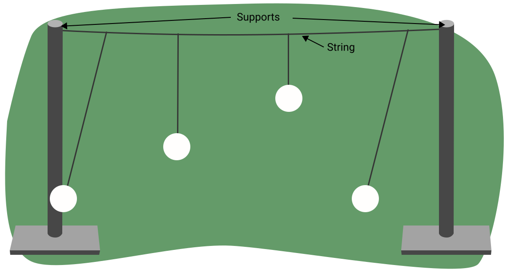
작은 진폭의 진동을 하는 진자의 주기는 길이에만 의존합니다. 이 경우, 그림은 같은 길이의 두 진자(1과 4)와 다른 길이의 두 진자(2와 3)를 보여줍니다.
진자 1을 밀면, 계속해서 앞뒤로 움직이지만 나머지 세 진자는 거의 움직이지 않습니다. 진자 3을 밀어도 마찬가지입니다.
그러나 진자 2를 밀면 이상한 일이 일어납니다. 진자 1과 3은 거의 움직이지 않지만, 진자 4는 몇 초 후 큰 진폭으로 앞뒤로 흔들리기 시작합니다. 이 때 진자 2는 진폭이 줄어들기 시작하여 결국 멈춥니다. 그러나 1~2초 후, 진자 2가 다시 흔들리기 시작하여 큰 진폭의 진동을 발전시키고, 진자 4는 안정되기 시작합니다.
진자 2와 4는 같은 고유 진동수를 가지고 있고, 나머지 두 진자는 다른 진동수를 가집니다. 진자 2가 앞뒤로 움직이기 시작하면, 다른 모든 진자를 지지하는 수평 끈에 작은 주기적 진동을 일으킵니다. 한 물체가 다른 물체와 공명하여 진동할 때, 이를 공감 진동이라고 합니다. 이 끈의 작은 진동은 진자 2와 4 모두와 같은 진동수를 가지므로, 따라서y can cause resonance in these two pendulums. 이 작은 vibrations in the horizontal support string 나머지 두 진자와 같은 진동수를 가지지 않으므로, 따라서 진자 1과 3에서는 공명이 발생하지 않습니다.
공감 진동
이전 예제는 공감 진동의 개념을 보여줍니다. 같은 고유 진동수를 가진 두 진자가 함께 공명했습니다.
탐구해 보세요!
다음 영상을 통해 소리굽쇠에서 공감 진동이 어떻게 발생하는지 이해하세요.
다음 영상은 공명의 효과를 보여줍니다. 와인 잔 왼쪽의 스피커는 유리잔의 고유 진동수와 같은 진동수를 가지고 있습니다. 유리잔의 공명은 큰 진폭으로 진동하게 하여 결국 깨지게 합니다.
상자에 부착된 소리굽쇠를 치면 훨씬 크게 들리며 방 건너편에서도 명확하게 들을 수 있습니다. 첫 번째 영상에서 보여준 것처럼, 같은 진동수의 두 소리굽쇠가 서로 가까운 두 다른 상자에 장착되면 공감 진동을 관찰할 수 있습니다. 하나의 소리굽쇠를 치면, 다른 소리굽쇠도 곧 진동하기 시작하여 소리를 냅니다. 이것은 공명의 좋은 예입니다. 한 소리굽쇠의 공기 중 음파가 다른 소리굽쇠에 도달하여 진동하게 합니다. 같은 진동수를 가지므로, 두 번째 소리굽쇠도 큰 소리를 냅니다. 한 소리굽쇠에 무게를 달면 진동수가 더 이상 일치하지 않아 공감 진동이 관찰되지 않습니다. 두 소리굽쇠를 모두 쳤을 때 맥놀이가 들리므로 진동수가 다르다는 것을 확인할 수 있습니다.
스피커가 유리잔의 고유 진동수와 다른 진동수의 소리를 내고 있었다면, 유리잔은 그렇게 큰 진폭으로 진동하지 않았을 것이고 깨지지 않았을 것입니다.
공명의 또 다른 극적인 예는 타코마 내로스 다리입니다. 다리의 고유 진동수와 같은 진동수로 불어오는 돌풍이 다리에 거대한 진동을 일으켜 결국 붕괴시켰습니다.
탐구해 보세요!
다음 영상은 타코마 내로스 다리에 대한 추가 설명을 제공합니다.
바람이 다리의 고유 진동수와 같지 않은 진동수로 불고 있었다면, 진동이 그렇게 커지지 않았을 것이고 다리는 아마 아직도 서 있었을 것입니다.
예제: 역학적 공명
자동차가 눈에 빠졌다고 상상해 보세요. 밀어내려고 할 때 깊은 바퀴 자국이 형성됩니다. 다른 사람이 운전하는 동안 공명을 이용하여 어떻게 자동차를 밀어낼 수 있을까요?
사람들이 뒤에서 자동차를 밀면 앞뒤로 흔들 수 있지만, 사람들은 probably 한 번에 밀어낼 수는 없을 것입니다. When the 자동차를 is rocking back and forth, 사람들은 could match the frequency of 자동차 운동의 진동수에 사람들은's 진동수를 맞출 수 있습니다. 이런 공명의 사용은 자동차 운동의 진폭을 증가시킵니다. 결국, the 자동차를 will rock back and forth enough so 는 the person driving is able to drive the 자동차를 바퀴 자국에서 빠져나올 수 있게 됩니다.
행진하는 병사들이 보조를 맞추며 작은 보행교를 함께 건너는 것이 왜 위험한가요?
행진하는 병사들의 진동수가 보행교의 고유 진동수와 일치하면, 다리가 공명하기 시작하여 큰 진폭의 진동을 경험할 수 있습니다. 이 진동은 병사들이 발을 헛디디게 하거나 다리를 손상시킬 만큼 클 수 있습니다.
현에서의 공명
기억하시겠지만, 현에서의 정상파는 두 개의 동일한 파동이 같은 매질에서 반대 방향으로 이동할 때 만들어집니다.
다음 그림에는 세 개의 루프. 각 루프는 파장의 절반 wavelength (1/2 λ), 따라서 this diagram displays a total of 1.5 wavelengths. 정상파는 몇 개의 루프.
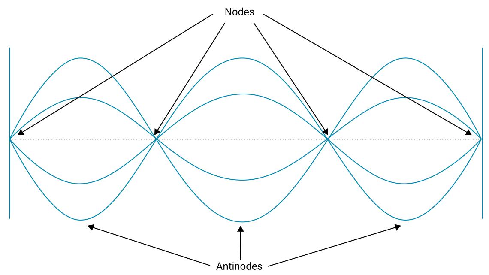
양쪽 끝에 고정된 현을 생각해 봅시다. 이것을 양쪽 끝이 고정된 현이라고 합니다.
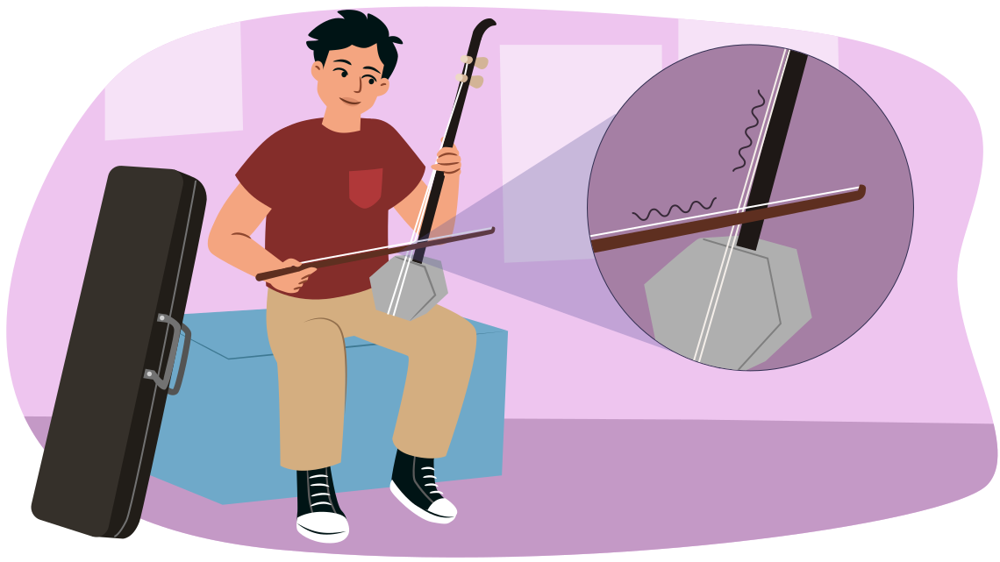
기타와 바이올린 같은 모든 현악기는 끝이 고정된 현을 가지고 있습니다. 현이 양쪽 끝에 고정되어 있으므로, 정상파가 현에 존재하더라도 이 지점들에는 마디 가 있어야 합니다.
이것은 정상파를 만드는 진동수가 하나의 루프, 또는 두 개의 루프, or three 루프, 등등. 특정 수의 루프 만 가능하므로, 파장은 제한된 수의 길이에서만 선택될 수 있습니다. 하나의 파장은 하나의 루프에 해당하고, 다른 것은 두 개의 루프, 또 다른 것은 세 개의 루프, 등등. 또한, 현에서의 진동 속력은 현의 재질과 장력의 특성이므로, 고정된 값입니다. 파동의 기본 방정식, 고려하면, 고정된 현에서 정상파를 만들 수 있는 진동수는 특정한 것만 가능합니다. Also, the amplitudes of the 루프 are much larger than the amplitude of the source making the waves. 이것은 마치 resonance.
다음 예제가 이 개념을 명확히 하는 데 도움이 될 것입니다.
길이 L의 현이 두 고정 위치 사이에 팽팽하게 당겨져 있다고 생각해 봅시다. A source of frequency, f1, starts making waves 는 travel at speed v along the string. stringed instrument, the source would be a bow or it could be a person's fingers plucking the string. A standing wave is created with one loop, as displayed in the following diagram.
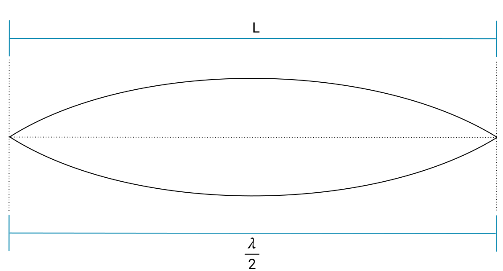
루프가 하나만 있으므로, .
이것을 다시 정리하면 .
Use 파동의 기본 방정식 and replace with . 이것은 단일 (1) loop, replace with .
이 를 가진 진동수를 the fundamental frequency . 이것은 현에서 정상파를 만들 수 있는 가장 낮은 진동수입니다.
진동수를 증가시키면, the single loop standing wave will disappear. 진동수를 continues to increase, eventually another standing wave with two 루프 will be created.
두 개의 루프 is labeled f2.
같은 현이므로, the speed of the wave is the same and the length of the string is the same.
There are two 루프 present, 따라서 .
Use 파동의 기본 방정식, and replace with . Replace with .
현의 길이와 파동의 속력이 주어지면, you can calculate the frequency 는 will create a standing wave with two 루프. 이것은 현에서 정상파를 만드는 두 번째로 작은 진동수입니다.
두 공식을 나란히 비교하면.
From this, and you can conclude 는 .
이것은 두 개의 루프 is twice the frequency 는 을(를) 만들며 one loop or twice the fundamental frequency.
, the standing wave pattern will disappear.
에서 진동수를 계속 증가시키면, 진동수가 , which will produce three 루프.
Notice the pattern? and , 등등. 일반적으로, 진동수 는 을(를) 만들며 n 루프 is , where is the fundamental frequency 는 을(를) 만들며 one loop and 1, 2, 3, 등등. 이 경향은 다음 표에 나타나 있습니다.
| 진동수 | 루프 in standing wave | 정상파 그림 |
|---|---|---|
| (fundamental frequency) | 1 | 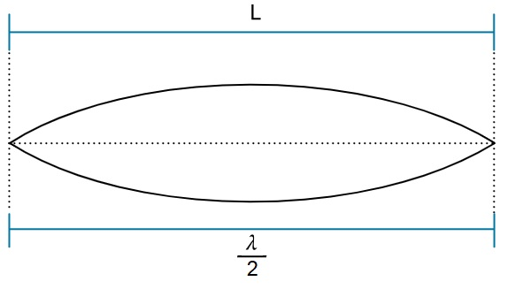 |
| 2 | 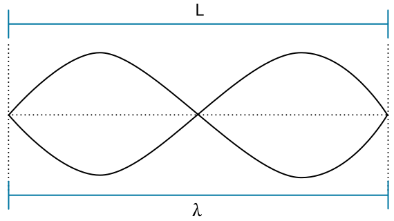 |
|
| 3 | 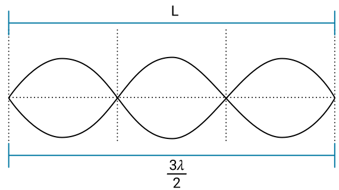 |
|
| 4 | 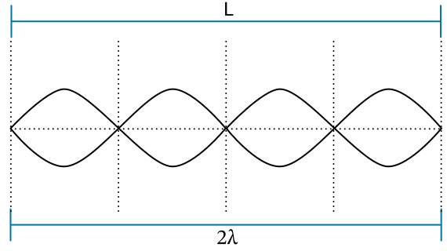 |
|
노트
정상파에 대한 지식을 사용하여 다음 예제를 노트에 풀어 보세요. 풀이 예시와 비교하여 이해도를 확인하세요.
A 4.0 m long string is fixed at both ends. A pulse in the string takes 0.10 s to start from one end and reach the other end.
1. 현에서의 파동의 속력은 얼마인가요?
주어진 값:
일반적인 변수 이름을 포함하여 주어진 정보를 적으세요.
구하는 값:
구하려는 변수를 적으세요.
공식:
미지수와 주어진 값을 포함하는 공식을 선택하세요.
풀이:
공식에 대입하고 원하는 값을 구하세요. Explain any work 는 isn’t immediately clear.
파동은 주기 동안 현의 전체 길이를 이동합니다.
결론:
유효 숫자를 고려하여 질문에 답하는 문장을 작성하세요.
파동의 속력은 .
2. 기본 진동수의 파장은 얼마인가요?
주어진 값:
구하는 값:
공식:
(or if you prefer, both appear in the learning activity.)
풀이:
결론:
기본 진동수의 파장은 8.0 m입니다.
3. 현의 기본 진동수는 얼마인가요?
주어진 값:
, from question (1) above. Note 는 when you use a previously-calculated value for another 문제에 사용할 때는, 유효 숫자로 반올림한 최종 결론이 아닌 는 was rounded due to significant digits.
, 문제 (2)에서 구한 값입니다.
구하는 값:
(the fundamental frequency is )
공식:
or . 두 공식 모두 적절하지만, L이 포함된 공식을 사용했다면 주어진 값 목록에 L을 포함해야 합니다. 이 문제는 여러 방법으로 풀 수 있습니다. 이 풀이 예시는 한 가지 방법만 제시합니다. 다른 방법을 사용했다면, 최종 답을 비교하고 풀이가 합리적인지 확인하세요. 어느 방법이든 허용됩니다.
풀이:
by rearranging 파동의 기본 방정식.
( 의 단위가 Hz와 같다는 것을 기억하세요.)
결론:
기본 진동수는 5.0 Hz입니다.
4. Find the frequency 는 will produce a standing wave with 3 루프.
주어진 값:
구하는 값:
(세 개의 루프 를 가진 진동수를 .)
공식:
(Again, this could be solved multiple ways. 대신 현의 길이를 참고할 수도 있고, . 이 풀이 예시는 주어진 공식을 사용하지만, 다른 풀이도 가능하고 유효합니다.)
풀이:
결론:
The frequency 는 creates a standing wave with three 루프 is 15 Hz. (2 significant digits, since 5.0 Hz, 4.0 m, and 0.10 s all had 2.)
5. Identify another frequency 는 will produce a standing wave in the string. How many 루프 will it have?
주어진 값:
구하는 값:
(We’re asked for another frequency)
(를 참고하여 , 또한 알아야 하는 것은 “how many 루프 will it have?” 아래 첨자인 n입니다. 이 문제에는 미지수가 두 개이므로 따라서 we put them both here.)
공식:
(이 단원 앞의 표 참조)
풀이:
먼저, 1이나 3이 아닌 아무 수 는 isn’t 1 or 3 (since we covered those cases already). 아무 수나 선택할 수 있습니다. 2가 좋은 선택이지만, but this could just as easily have been 4, or 5, 등등.
.
그러면
결론:
정상파를 만드는 다른 진동수는 , which will have 2 루프. (Note 는 10 Hz는 유효 숫자가 2자리이고 and “10” 은 1자리뿐이므로, 과학적 표기법으로 나타내야 합니다.)
6. 23 Hz의 진동수가 현에서 정상파를 만들 수 있나요? 설명하세요.
이 문제는 단순한 계산 문제가 아니므로, 반드시 일반적인 GUESS 문제 풀이 구조를 따를 필요는 없습니다. 물론 사용할 수 있지만, 말로 답할 수도 있습니다.
아니요, 23 Hz는 정상파를 만들지 못합니다. 모든 정상파는 기본 진동수 5.0 Hz의 정수 배인 진동수를 가집니다. 23은 5의 배수가 아니므로, 23 Hz는 이 현에서 정상파를 만들 수 없습니다.
다른 현에서는 다른 기본 진동수가 가능합니다. 하지만 이 현에서는 frequencies 는 정상파를 만든다 are multiples of 5.0 Hz.
공기 기둥
팽팽한 현을 뜯으면 그다지 큰 소리가 나지 않습니다. 기타는 본질적으로 나무 상자 위에 팽팽한 현을 장착하여 사용합니다 — 공기 상자입니다. 그 결과 큰 소리가 납니다. 배우게 되겠지만, 공기 상자는 공명을 이용하여 조용한 현의 소리를 방 전체에 들릴 수 있을 만큼 증폭시킬 수 있습니다.
대부분의 소리굽쇠는 쳤을 때 그다지 크지 않습니다. 때때로 소리를 키우기 위해, 다음 그림과 같이 한쪽 끝이 열린 나무 상자 위에 장착합니다.
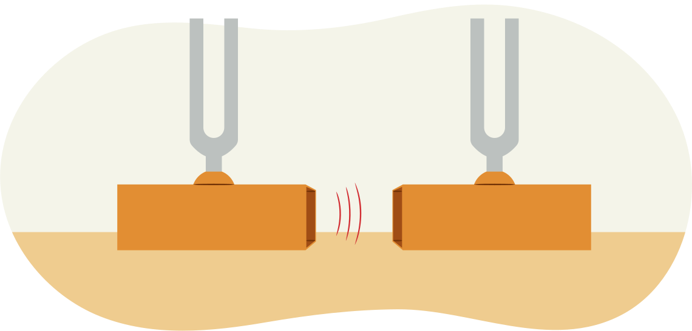
이 장치는 이전에 접한 적이 있습니다. 이 장치는 소리굽쇠에서 발생하는 공감 진동에 대한 영상에서 시연된 것과 동일합니다.
탐구해 보세요!
다음 영상은 닫힌 공기 기둥에서 공명을 조사하는 데 사용할 수 있는 장비를 보여줍니다. 닫힌 공기 기둥은 공기가 들어 있는 긴 용기로, 한쪽 끝은 열려 있고 다른 쪽 끝은 닫혀 있습니다. 다음 실험 장치에서는 물을 사용하여 원통의 바닥 끝을 닫습니다.
닫힌 공기 기둥 위에 소리굽쇠를 놓으면 소리가 기둥 아래로 전달됩니다.
소리는 물에서 반사되어 닫힌 공기 기둥을 통해 다시 위로 올라가며, 소리의 정상파를 만들 수 있습니다. 물은 고정 끝처럼 작용하여, 닫힌 공기 기둥의 바닥에는 항상 마디가 있습니다.
배(파동의 넓은 부분)가 닫힌 공기 기둥의 꼭대기에 위치하면, 공명으로 인해 소리굽쇠에서 평소보다 훨씬 큰 소리가 들립니다.
이것은 현에서 만들어지는 정상파와 매우 유사합니다. 현에서는 양쪽 끝이 마디. 이 유형의 공기 기둥에서는 한쪽 끝이 마디이고 다른 쪽 끝이 배입니다.
소리굽쇠와 공명을 만드는 가장 짧은 공기 기둥이 다음 간략화된 그림에 나타나 있습니다.
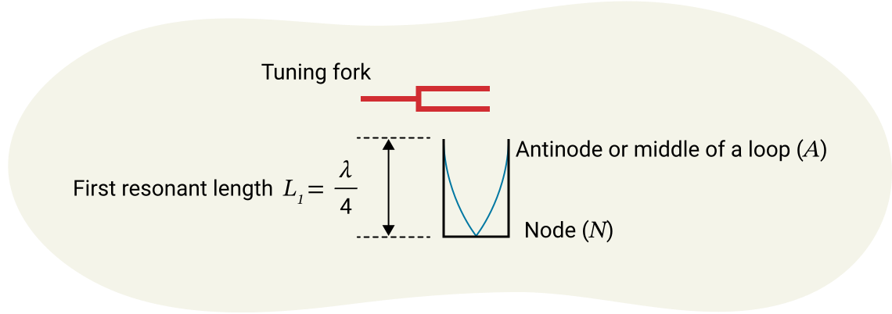
이 경우, 루프의 절반만 있으므로 공기 기둥의 길이는:
공기 기둥을 올리면 더 이상 큰 소리가 나지 않습니다. 결국 다른 배가 공기 기둥의 꼭대기에 위치하게 되고 다시 공명이 일어나 큰 소리가 납니다. 이 경우, 완전한 루프 하나와 루프의 절반이 공기 기둥 안에 들어갑니다.
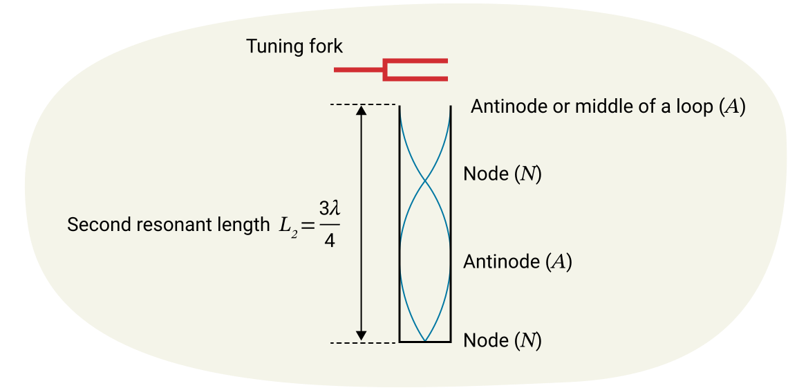
앞서 언급했듯이, 하나의 루프는 파동 파장의 절반과 같은 길이를 가집니다. 이 경우, 공기 기둥의 두 번째 공명 길이는:
이 공명 길이는 첫 번째보다 루프 하나, 즉 λ/2 만큼 더 깁니다.
세 번째 공명 길이를 구하려면 루프 하나, 즉 λ/2.
이것은 세 번째 공명 길이가 다음과 같다는 것을 의미합니다:
요약
음파의 진동수를 알면, 공명 길이를 만드는 데 필요한 닫힌 공기 기둥의 길이를 계산할 수 있습니다. 공명 길이는 큰 소리를 만드는 것이기 때문에 중요합니다. 공기 기둥이 올바른 길이가 아니면, 공명이 없기 때문에 소리가 증폭되지 않습니다.
| 길이 | Number of 루프 in standing wave | 정상파 그림 |
|---|---|---|
| 0.5 |
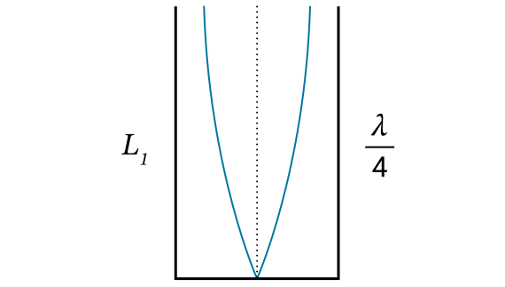 |
|
| 1.5 | ||
| 2.5 |
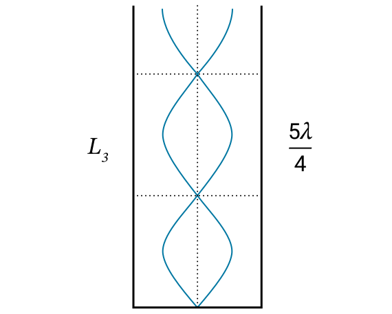 |
|
| 3.5 |
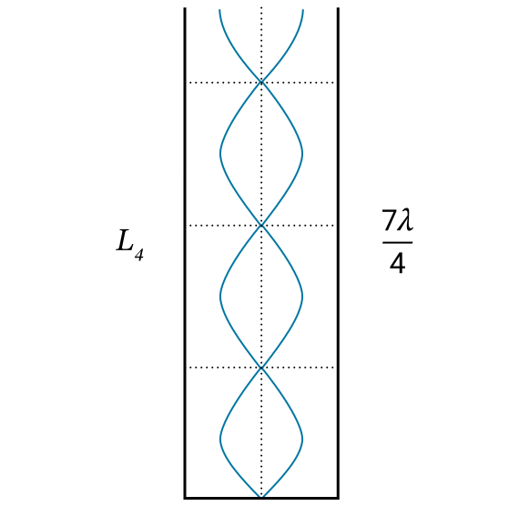 |
|
노트
노트를 사용하여 다음 각 문제를 풀어 보세요. 풀이 예시와 비교하여 이해도를 확인하세요. 문제에 대한 힌트가 필요하면 힌트 버튼을 누르세요.
1. 닫힌 공기 기둥의 첫 번째 공명 길이는 20 cm입니다. 두 번째와 세 번째 공명 길이를 구하세요.
2. 공기 중 음속이 344 m/s일 때, 진동수 460 Hz의 소리굽쇠와 공명하는 가장 짧은 공기 기둥의 길이는 얼마인가요?
3. 소리굽쇠가 한쪽 끝이 닫힌 관에서 공명을 일으킵니다. 첫 번째 공명 길이와 두 번째 공명 길이의 차이는 0.390 m입니다. 공기 온도는 26.0 °C. 소리굽쇠의 진동수와 관의 세 번째 공명 길이를 구하세요.
지금까지 닫힌 공기 기둥의 길이를 변화시키는 것을 분석했습니다. 소리의 속력이 일정하고 닫힌 공기 기둥의 길이도 일정할 때, 진동수를 조정하여 기둥이 공명 진동수를 가지는 것으로 생각할 수도 있습니다. 닫힌 공기 기둥에 대한 지식을 다음 문제에 적용해 보세요.
4. 배의 기적은 길이가 0.50 m이고 한쪽 끝이 닫혀 있습니다. 소리의 속력이 350 m/s일 때, 배의 기적의 첫 번째와 두 번째 공명 진동수를 구하세요.
실험 보고서
실험 보고서는 과학적 글쓰기의 한 형태입니다. 실험 보고서는 포함된 흥미로운 정보를 다른 과학자들이 신뢰성 있게 해석할 수 있도록 표준 구조를 따릅니다. 실험 보고서는 과학자가 명시된 실험을 수행하고, 주어진 결과를 발견하며, 명시된 결론을 투명하게 도출했다는 증거입니다. 결과를 검증하고자 하는 다른 과학자들이 반복할 수 있는 방식으로 작성됩니다.
이 과정의 기대 사항 중 하나는 실험 보고서를 이해하고 작성하는 것입니다.
샘플 실험 보고서를 참고하려면 아래 예시에 접근할 수 있습니다. 이것은 약간 다른 실험에 대한 예시 보고서입니다. 실험 보고서 형식을 개선하는 데 사용할 수 있습니다. 이 실험을 수행할 필요는 없습니다.
샘플 실험 보고서를 보려면 여기를 누르세요.(새 창에서 열림)
다음 실험 활동을 탐구하세요.
실험 활동
닫힌 공기 기둥을 이용한 공기 중 음속 측정 실험
이제 실험을 검토한 다음 영상을 탐구하세요. 그러면, complete the analysis and conclusion question. 단원 1 과제에서 이 활동을 다시 참고하게 됩니다.
탐구해 보세요!
다음 영상을 시청하세요. 영상이 몇 번 멈추므로 (화면의 설명을 읽을 수 있도록) 실험 장치와 결과를 확인할 수 있습니다.
열린 공기 기둥
지금까지 양쪽 끝이 고정된 정상파를 조사했습니다 (마디 at each end), and standing waves with one fixed and one free end (one end is a node and one is an antinode). 또 다른 유형의 공기 기둥이 있는데, 긴 원통의 양쪽 끝이 모두 열려 있습니다. This 를 가진 진동수를 an open air column. 이 새로운 유형은 파동의 양쪽 끝이 모두 배마디.
다음 그림들은 양쪽 끝이 모두 열린 공기 기둥에서 형성되는 정상파를 보여줍니다.
예제
양쪽 끝이 열린 길이 1.2 m의 오르간 파이프가 기본 진동수의 음을 냅니다. 공기 중 음속이 345 m/s일 때, 기본 진동수는 얼마인가요?
주어진 값:
구하는 값:
공식:
풀이:
그러면, use 파동의 기본 방정식 to find the frequency.
결론:
따라서, 파이프의 기본 진동수는 144 Hz입니다.
요약
음파의 진동수를 알면, 공명 길이를 만드는 데 필요한 열린 공기 기둥의 길이를 예측할 수 있습니다. 공명 길이는 큰 소리를 만드는 것이기 때문에 중요합니다. 공기 기둥이 올바른 길이가 아니면, 공명이 없기 때문에 소리가 증폭되지 않습니다.
| 길이 | Number of 루프 in standing wave | 정상파 그림 |
|---|---|---|
| 1 | ||
| 2 | ||
| 3 | ||
풀어 보세요!
다음 열린 공기 기둥의 파동에 관한 문제를 풀어 보세요. 풀이 예시와 답을 비교해 보세요.
1. 음속이 344 m/s일 때, 진동수 380 Hz의 소리굽쇠를 열린 공기 기둥 위에서 칩니다. 소리의 파장은 얼마인가요? 처음 세 공명 길이는 얼마인가요?
주어진 값:
(유효 숫자 2자리이므로, 이것이 최종 답의 유효 숫자를 제한할 것입니다.)
구하는 값:
공식:
풀이:
, 따라서
결론:
파장은 0.91 m이고 처음 세 공명 길이는 0.45 m, 0.91 m, 1.4 m입니다.
2. 공기 온도가 18 °C. 세 번째 공명 길이는 두 번째 공명 길이보다 얼마나 더 긴가요?
주어진 값:
구하는 값:
공식:
and
풀이:
먼저 음속을 구합니다.
, 따라서
결론:
세 번째 공명 길이는 두 번째 공명 길이보다 0.38 m 더 깁니다. (흥미로운 관찰: 각 공명 길이는 이전 것보다 만큼 더 기므로, 연속된 모든 공명 길이 쌍도 이 차이를 가집니다.)
3. 열린 공기 기둥을 집 안에 설치하여 첫 번째 공명 길이로 소리굽쇠와 공명하도록 합니다. 공기 기둥과 소리굽쇠를 모두 겨울에 밖으로 가져갔지만, 이제 공명이 관찰되지 않습니다. 이유를 설명하세요.
공기 기둥에서의 공명은 진동수와 음속이 결합하여 정확한 파장을 만드는 것과 관련됩니다.
겨울에 밖에서는 공기 온도가 낮으므로 음속도 낮습니다.
소리의 속력이 이제 더 낮으므로, 이와 관련된 파장은 소리굽쇠의 진동수에 해당하는 파장도 짧아져 공명 길이와 더 이상 일치하지 않습니다 of the open air column. 그 결과, 공명에 필요한 보강 간섭이 발생하지 않아 공명이 관찰되지 않습니다.
4. 밖에서 공명을 일으키려면 더 낮은 진동수의 소리굽쇠가 필요한지 더 높은 진동수의 소리굽쇠가 필요한지 설명하세요.
밖에서의 음속은 더 느립니다. , to keep wavelength the same with the smaller speed, frequency would also need to be made smaller. 밖에서 공명을 일으키려면 더 낮은 진동수의 소리굽쇠가 필요합니다. 이것이 그 이유 중 하나입니다 악기를 연주할 환경과 같은 환경에서 조율하는 것이 중요합니다.

조개껍데기: 마법인가 과학인가?
조개껍데기를 귀에 대면 바다 소리가 들린다고 합니다. 이 상황에 대해 가질 수 있는 질문을 기록하세요.
탐구해 보세요!
조개껍데기에서 들리는 소리의 원인에 대한 설명을 다음 영상에서 확인하세요.
세계와의 연결
캐나다 전역의 원주민 공동체에서, 드럼은 많은 퍼스트 네이션, Mé메티, 이누이트 문화의 필수적인 부분입니다. 일부 원주민은 파우와우나 사교 모임 같은 행사에서 큰 드럼을 사용하며, 한 사람이 들고 연주할 수 있는 작은 핸드 드럼도 사용합니다. 드럼은 특정 공동체의 고유한 지리와 전통에 따라 제작됩니다.
예를 들어, 킬라우트라고도 알려진 이누이트 핸드 드럼은 순록과 물범 가죽으로 만들어지며, 하우데노소니 워터 드럼은 삼나무나 단풍나무 같은 지역 나무에 사슴 가죽을 위에 팽팽하게 늘여 만듭니다.
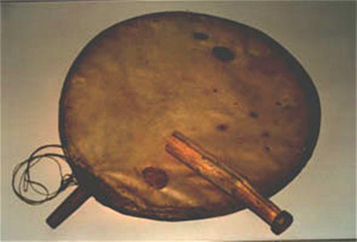
캐나다 북부의 이누이트 정착지인 에스키모 포인트의 킬라우트.
퍼스트 네이션, Mé메티, 이누이트 공동체에서 드럼 연주는 보통 춤과 노래와 결합됩니다. 원주민 공동체에서 드럼의 역할은 소리나 음악의 생산을 넘어섭니다. 드럼은 영적, 사회적 연결과 치유도 제공합니다. 드럼은 출신 공동체에 따라 다르며, 해당 공동체 지역의 재료로 만들어집니다.
예를 들어, 이누비알루이트의 이누이트 (meaning “the real 사람들은”) 는 현대의 노스웨스트 준주에 해당하는 서부 북극 지역 출신이며, 캐나다의 네 이누이트 지역 중 하나에 속합니다.
탐구해 보세요!
다음 영상에서, 이누비알루이트의 울루크학톡 서부 드러머와 댄서 단원들이 순록 가죽으로 만든 드럼을 어떻게 사용하는지 관찰하세요. 드럼에 관한 가르침과 전통도 공동체마다 다릅니다.
다음 드럼 연주에 관한 영상은 오지브웨 사람들에게 드럼의 의미와 드럼이 어떻게 만들어지는지 설명합니다.
이 영상들을 탐구할 때, 원주민의 앎, 존재, 행동의 방식이 과학적 방식만큼 중요하다는 것을 이해하는 것이 중요합니다. 이 두 방식은 모순되지 않으며, 원주민 지식이 과학적 지식을 포함하고 그 반대도 마찬가지이므로 종종 겹칩니다. 원주민 지식과 과학적 지식 모두 우리 주변 세계를 이해하는 방법이라는 것이 중요합니다.
읽기
다음 기사 전통 원주민 지식을 수용하는 과학자들을 만나다 (새 창에서 열림) 의 저자 Jimmy Thomson ( The Narwhal )은 “Indigenous” and “western” science.
노트
이 단원의 모든 학습 활동을 완료했으므로, 다음 지시를 사용하여 독립적인 연구를 완성하세요. 연구 결과를 노트에 기록하세요.
- 이 단원에서 다룬 주제와 관련된 관심 있는 직업을 선택하세요. 이 직업을 추구하는 데 필요한 교육과 훈련을 조사하세요.
- 이 단원의 내용과 관련된 물리학 분야의 유명한 캐나다 물리학자를 선택하세요. 물리학자의 이름, 물리학 지식에 기여한 시기, 기여 내용, 그리고 사회에 어떤 이점을 주었는지를 포함하는 짧은 전기를 준비하세요.
복습
복습 the vocabulary related to resonance. Ensure 는 you have a good understanding of how to use these words to describe the physics involved.
학습 활동 1.5 과제
준비가 되면, 다음 페이지로 이동하여 1.5 과제새 창에서 열림에 대해 더 알아보세요.
전이 가능한 기술 설문
단원을 완료했으므로, 1.1에서 소개된 온타리오 전이 가능한 기술의 시연을 검토할 기회를 가지세요. 단원 1 전이 가능한 기술 설문을 완성하여 평가와 그 평가에 대한 구체적인 근거를 공유하세요.
전이 가능 기술 설문조사 버튼을 눌러 접근하세요.
자기 점검 퀴즈
이해도를 확인하세요!
다음 자기 점검 퀴즈를 풀어 현재 학습 위치와 집중해야 할 영역을 파악하세요.
이 퀴즈는 피드백 전용이며 성적에 포함되지 않습니다. 이 퀴즈에 대한 시도 횟수는 무제한입니다. 충분한 시간을 가지고 최선을 다하며, 제공된 피드백을 되돌아보세요.
퀴즈 버튼을 눌러 이 도구에 접근하세요.